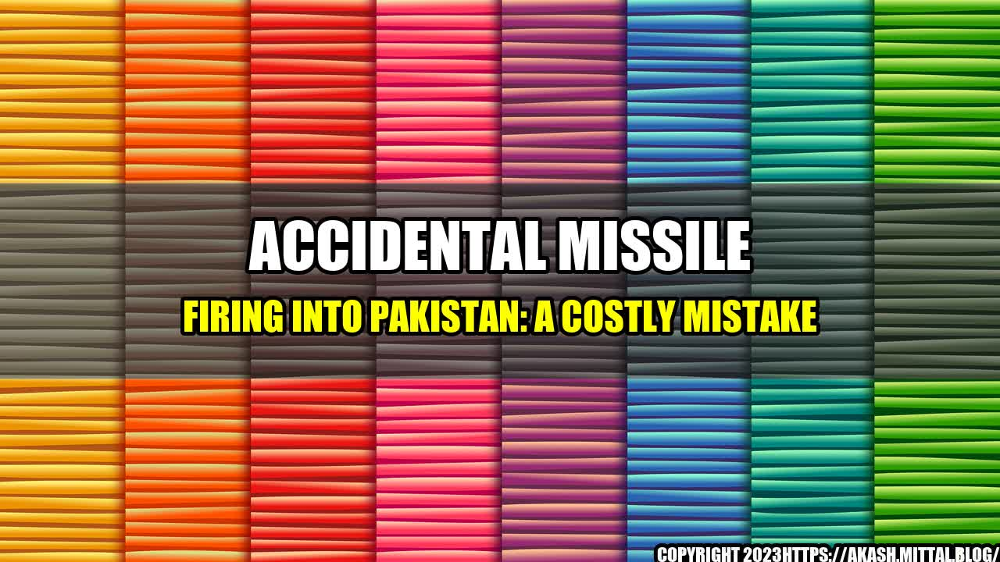

Accidental Missile Firing into Pakistan: A Costly Mistake

It was just another routine day for the Indian Armed Forces when the unexpected happened. A missile was accidentally fired into the bordering country of Pakistan causing a loss of Rs 24 crore. This mistake resulted in an unnecessary expense that could have been avoided with the right measures and precautions.
This incident is just one example of a costly mistake that organizations can make, with the potential consequences ranging from financial loss to loss of lives. It is therefore important for companies and institutions alike to be aware of the risks they may face and take necessary measures to mitigate them.
- Financial Loss: The loss of Rs 24 crore due to the missile firing is a clear example of financial loss that can result from an error. This money can no longer be utilized for other important purposes and can take months or even years to recover.
- Reputation Damage: The accidental missile firing into Pakistan has caused significant damage to the reputation of the Indian Armed Forces. The incident has led to negative coverage by the media and the public's trust in the organization has taken a hit.
- Legal Ramifications: Unintentional damages caused by an organization can lead to lawsuits and legal consequences. This can be a time-consuming and resource-intensive process that can affect the functioning of the organization in the long run.
So, what can organizations do to prevent costly mistakes like this?
- Invest in Training: Proper training and education can go a long way in preventing mistakes. Employees who are trained in their respective fields are less likely to make errors that can lead to major consequences. They must also be trained to handle emergencies and crises situations.
- Adopt Technologies: Technology can be employed to mitigate human error. For example, automated systems can be used to double-check critical processes such as missile firing, ensuring that all systems are functioning as expected before action is taken.
- Encourage Reporting: Employees should be encouraged to report errors and near-misses so that corrective action can be taken. This will help in identifying areas for improvement and prevent similar mistakes from happening in the future.
Mistakes can happen, but it is the responsibility of organizations to put measures in place to prevent them from occurring and minimize the potential consequences. By investing in training, adopting technologies, and encouraging reporting, organizations can mitigate the risks associated with costly mistakes.
Personal Anecdote: As a software developer, I have made mistakes in my code that have resulted in major issues for my company. Since then, I have learned the importance of thoroughly testing and double-checking my work to minimize the potential for errors.
References:
Hashtags:
#AccidentalMissileFiring #CostlyMistake #PreventionMeasures #Training #Technology #Reporting #FinancialLoss #ReputationDamage #LegalRamifications #WorkplaceSafety #RiskMitigation
Category:
Business
Curated by Team Akash.Mittal.Blog
Share on Twitter Share on LinkedIn